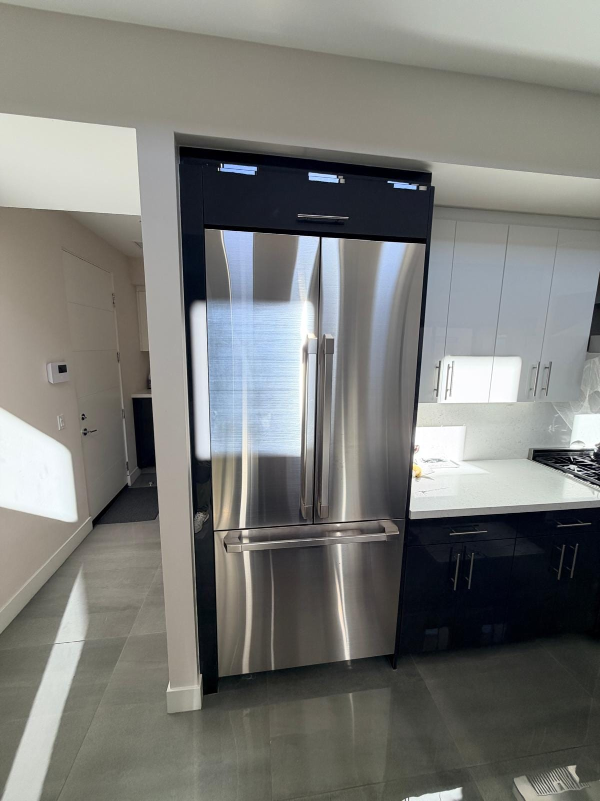
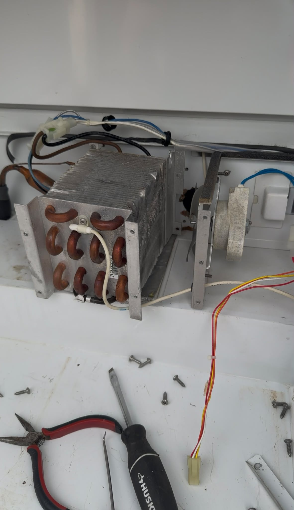
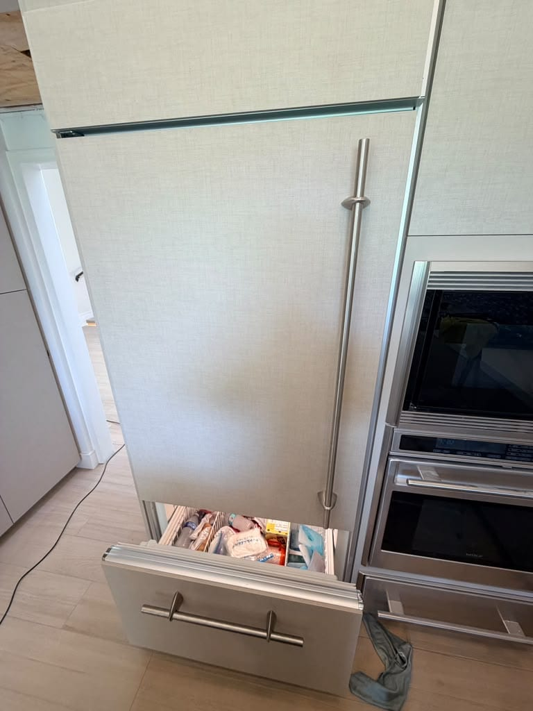
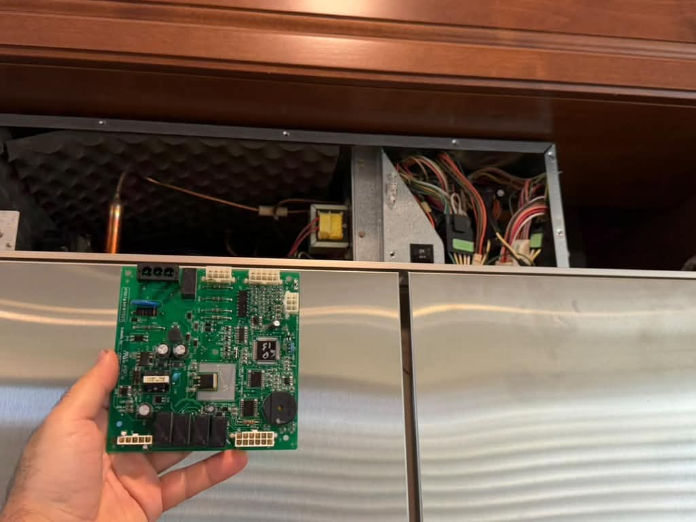

Appliance Repair in Palm Springs, CA
Orange County's appliance repair specialists, now serving the Coachella Valley including Palm Springs (ZIPs 92262 and 92264). Our Coachella Valley technician is based in Palm Springs and covers the nearby desert cities, so same-day is available when that schedule is open. Licensed and insured.
5.0 · 162 Google reviewsMon–Sat, 8am–7pm. Two-hour arrival window. The technician calls before arriving.
See neighborhoods and ZIP codes
What to expect
- Flat $99 diagnostic feeApplied toward the repair if you approve the work.
- Written quote firstItemized, before any work starts.
- 90-day parts, 30-day laborWarranty on every repair.
- Same-day serviceCall or request online.
Family-owned since 2017 · Licensed, bonded & insured
Recent Repairs in Palm Springs
Real jobs completed by our technicians in Palm Springs: a Dacor refrigerator compressor replacement, a Sub-Zero under-counter refrigerator evaporator leak repair, a KitchenAid refrigerator condenser fan motor replacement, and a KitchenAid refrigerator control board replacement.



What Our Customers Say
From our 162 verified 5-star Google reviews
We have had AG our technician work for us in a couple of occasions. He is great and has done an amazing job with our fridge at least twice. He has saved from wasting money on new appliances. Thanks AG
We had great service. It was prompt. We needed to order a part and it came in fast. They were back out to finish the job and did a great job. Friendly and professional.
AG of Universal Appliance Repair Group has helped our family with both our Thermador dishwasher and stove top, both times he did an excellent and professional job.
Services We Offer in Palm Springs
From refrigerators and wine coolers to washers and disposals, we repair every major home appliance. Each service links to its full Orange County hub page with brand coverage and common symptoms.
Request
Call (949) 629-5365 or submit the online form. Tell us the appliance type, brand, and the symptom you are seeing.Diagnose
We schedule your Palm Springs visit with whichever technician can reach you soonest, same-day when that schedule is open, then run a full diagnostic on arrival.Quote
You receive a firm, transparent quote before any work begins. No hidden fees. You decide whether to proceed.Repair + Warranty
Most repairs are completed in one visit. All work carries a 90-day parts and 30-day labor warranty.
Palm Springs Repair Pricing
Our Palm Springs diagnostic fee is a flat $99, credited toward your repair if you proceed. It is the same fee we charge everywhere we work, with no desert or distance surcharge. Most Palm Springs repairs fall in the $150–$400 range, with sealed-system and built-in luxury work running higher. Seniors 60+ and repeat customers get 20% off labor.
Estimates vary by brand, part availability, and diagnosis. Final quote is provided before repair. Full pricing guide
We serve Cathedral City, Rancho Mirage and Palm Desert on the same Coachella Valley routes.
Palm Springs Neighborhoods We Serve
About 45,000 people live in Palm Springs (Census Bureau estimate, July 2025), roughly two thirds of them in homes they own. The city sits below Mount San Jacinto where the CA-111 runs down from the I-10, and it is hot: the July average high is around 109 degrees. That single fact shapes most of our work here, because every refrigerator, freezer and ice maker in town is fighting it. We cover both residential ZIP codes, 92262 and 92264.
-
Movie Colony
ZIP 92262Walled estates and restored period homes just east of downtown. Frequently high-end built-in Sub-Zero, Wolf and Viking suites, and often second homes that sit empty part of the year.
-
Old Las Palmas & Vista Las Palmas
ZIP 92262The classic north-side neighborhoods against the mountain. Original and restored mid-century kitchens where a built-in oven or cooktop is worth repairing rather than replacing.
-
Racquet Club Estates
ZIP 92262Alexander-built mid-century tracts on the north end. Compact galley kitchens, and a lot of garage refrigerators taking the full force of the summer.
-
Twin Palms & Deepwell Estates
ZIP 92264Twin Palms Estates is about 90 homes built in 1957 and 1958 to Palmer and Krisel designs; Deepwell sits just east. Period kitchens with cabinet openings modern units rarely fit.
-
Warm Sands & Sunmor
ZIPs 92262, 92264Central neighborhoods close to downtown and the Palm Springs Art Museum. A mix of full-time residents and seasonal owners, so we see plenty of restart failures.
-
Indian Canyons
ZIP 92264The southern end of the city toward the canyon mouth. Larger newer homes with full appliance packages, second refrigerators and outdoor kitchens.
About Palm Springs
Palm Springs sits at the western end of the Coachella Valley, under Mount San Jacinto, with the CA-111 carrying most of the traffic down from the I-10 through the San Gorgonio Pass. About 45,000 people live here year round (Census Bureau estimate, July 2025). The Palm Springs Aerial Tramway, open since 1963, climbs from Chino Canyon to a mountain station at 8,516 feet, and Palm Canyon Drive is the spine of downtown. Palm Springs International Airport is the valley's only commercial airport, and Moorten Botanical Garden has been growing desert plants here since 1938.
The architecture is the other thing the city is known for. Richard Neutra, Albert Frey, E. Stewart Williams and Donald Wexler all worked here between 1945 and 1975, and the Alexander Construction Company built roughly 2,500 homes across the region to Palmer and Krisel designs, including the ninety or so houses of Twin Palms Estates in 1957 and 1958. A lot of those kitchens are still original or restored to period, which is why so many calls here are about a built-in oven or cooktop that has to be repaired rather than swapped.
What all of it has in common is the climate. A July average high near 109 degrees means every refrigerator, freezer and ice maker in town runs hard for months; Desert Water Agency's groundwater is classified as very hard, so scale builds on heating elements and valves; and the windblown dust advisories the air district issues most years put a layer of fine sand on condenser coils that cannot then shed heat. Add the houses that sit closed up through the summer and get reopened in the fall, and you get a pattern of failures that is genuinely specific to this valley.
Common Appliance Problems We Fix
Most repairs are finished in a single visit. These are the symptoms we see most in Palm Springs, where desert heat and hard water drive a lot of the failures.
- Refrigerator not cooling or running warm
- Freezer warm while the fridge section stays cold
- Washer not draining or leaving clothes soaked
- Dryer taking two cycles to finish a load
- Dishwasher not draining or leaving standing water
- Ice maker stopped producing in summer heat
- Oven not heating or holding temperature
- Gas cooktop burner not lighting or sparking
- Oven convection fan noisy or not running
- Condenser fan noisy, clogged with sand or dust
- Dishwasher leaving white film or not drying
- Appliance failing on restart after months idle
Brands we repair
Palm Springs kitchens run the full range, from everyday Whirlpool and LG to the built-in Sub-Zero, Wolf and Viking suites common in the estate neighborhoods. We handle standard residential units and premium luxury brands alike. We also repair Dacor and DCS.
- Sub-Zero
- Wolf
- Samsung
- LG
- Whirlpool
- GE
- Maytag
- Frigidaire
- Bosch
- KitchenAid
- Kenmore
- Miele
- Thermador
- Viking
- Electrolux
Independent repair service. Not affiliated with or endorsed by these manufacturers; brand names and logos are trademarks of their owners. If your appliance is still under manufacturer warranty, check with the manufacturer before booking.
Appliance repair across Palm Springs
Universal Appliances Repair Group Inc. provides appliance repair in Palm Springs, CA, a Coachella Valley city in Riverside County, for refrigerators, freezers, ice makers, washers, dryers, dishwashers, ovens, stoves, garbage disposals, and wine coolers. We cover the Movie Colony, Old Las Palmas, Vista Las Palmas, Deepwell Estates, Racquet Club Estates, Twin Palms, Warm Sands, Sunmor, and Indian Canyons, across ZIP codes 92262 and 92264.
Same-day service is available. We also serve Cathedral City, Rancho Mirage, and Palm Desert. Call (949) 629-5365 or book online.
FAQ: Palm Springs Appliance Repair
Still have a question? Call (949) 629-5365.
Yes. Palm Springs is part of our Riverside County service area, and our Coachella Valley technician is based in Palm Springs and covers the nearby desert cities, so a visit here is not a special trip. Same-day appointments are available when that schedule is still open; when it is not, next-available is usually within a day or two. Call (949) 629-5365 and we will tell you what the calendar actually looks like for ZIPs 92262 and 92264.
Heat. The July average high here is about 109 degrees (NOAA 1991 to 2020 normals), and a refrigerator or freezer is simply a heat pump: the hotter the room around it, the longer the compressor runs and the harder the condenser has to work to dump heat. A unit in an uninsulated garage or a sun-facing kitchen can run near-continuously for months. That is why we see so many failed condenser fans, iced-up evaporators, ice makers that stop producing in July, and compressors that give out years early. Keeping the condenser coils clean is the single highest-value thing you can do for an appliance in this climate.
It does, and it is not a sales line: the South Coast Air Quality Management District issues windblown dust advisories for Palm Springs and the Coachella Valley several times a year. Fine sand settles on condenser coils and in fan housings, where it behaves like a blanket: the coil cannot shed heat, so the compressor runs longer and hotter, in a climate that is already punishing it. Garage refrigerators, outdoor and outdoor-kitchen units, and anything with an exposed rear coil take the worst of it. We clean coils as part of a diagnostic rather than treating it as an upsell.
We cover both of the city's residential ZIP codes, 92262 on the north and west side and 92264 to the south. ZIP 92263 is a post-office box designation only, not a delivery area. Neighborhoods include the Movie Colony, Old Las Palmas and Vista Las Palmas, Deepwell Estates, Racquet Club Estates, Twin Palms, Warm Sands, Sunmor and Indian Canyons. We also serve Cathedral City, Rancho Mirage and Palm Desert on the same Coachella Valley routes.
This is one of the most common calls we take here. An appliance that sat idle through a desert summer often fails on restart rather than during use. Ice makers are the usual first casualty: the supply line stagnates, the mold and fill valve stick, and the first batch is either nothing or a solid block. Dishwasher and washer seals dry out and then weep once water hits them, and refrigerator door gaskets that baked all summer stop sealing. If you are opening a house back up, run every water-using appliance once while you are still standing there, rather than discovering the leak later.
Yes. Desert Water Agency, which supplies Palm Springs, draws mainly on local groundwater, and by the U.S. Geological Survey's classification that groundwater is very hard. Hard water leaves scale on heating elements, spray arms, inlet valves and pump seals. In practice that shows up as a dishwasher that stops drying properly or leaves a white film, a washer that fills slowly, and heating elements that burn out earlier than they should. When we diagnose one of those symptoms here, mineral buildup is the first thing we look at, not the last.
Often, yes, and we will be straight with you when we cannot. Palm Springs has a lot of original mid-century housing stock, including tracts like Twin Palms Estates, roughly 90 homes built in 1957 and 1958 to Palmer and Krisel designs for the Alexander Construction Company. Kitchens in those homes are frequently either original or restored to period, with built-in ovens and cooktops in cabinet openings that no modern unit drops into. Where a part is still available, repairing is almost always better than replacing, because replacement usually means cabinet work too. Where a part is genuinely gone, we will tell you that instead of fitting something that does not belong.
Yes. All repairs carry a 90-day parts and 30-day labor warranty, the same coverage we provide across Orange County. If the same issue returns within 30 days, we come back and fix it at no additional charge; replaced parts stay covered for 90 days. Your technician reviews the specific warranty terms with the quote, before any work begins.
Need Appliance Repair in Palm Springs?
Serving Palm Springs (ZIPs 92262 and 92264) and the Coachella Valley, with same-day scheduling when our valley technician's schedule is open. Licensed technicians, 90-day parts / 30-day labor warranty on every job.
Call (949) 629-5365
Request a Repair
Mon–Sat, 8am–7pm